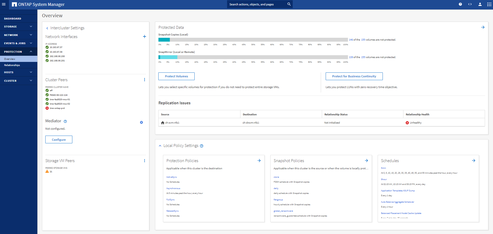

간편성 향상
기여자
이 섹션에서는 단순성 개선을 위한 ONTAP 9.8의 개선 사항에 대해 다룹니다. 여기에는 다음이 포함됩니다.
-
ONTAP 시스템 관리자 업데이트
-
ONTAP 업그레이드 및 기술 업데이트 개선사항
-
REST API의 향상된 기능
System Manager의 향상된 기능
ONTAP 9.7에서는 관리자가 스토리지 프로비저닝, 일상적 운영 등 ONTAP 기본 작업을 관리하는 방식을 단순화하기 위해 시스템 관리자 GUI의 새로운 기능을 소개했습니다. 새로운 GUI는 ONTAP 9.6에 추가된 REST API도 활용합니다. ONTAP 9.8에서는 System Manager 클래식 보기가 제거되었습니다.
인터페이스 간의 주요 차이점 중 하나는 대시보드이며, 이는 NetApp ONTAP 시스템 관리자에 처음 로그인할 때 나타나는 첫 번째 페이지입니다.
다음 그래픽은 System Manager 대시보드의 기존 버전과 새 버전을 나란히 비교하여 보여 줍니다.

자세히 살펴보면 몇 가지 중요한 차이점이 있습니다.
상태/경고
처음 Classic System Manager에 로그인하면 왼쪽 상단 구석에 클러스터 및 노드 장애 목록이 표시됩니다. 이러한 링크는 클릭 가능한 링크로 요약됩니다. 링크 중 하나를 클릭하면 System Manager의 다른 페이지로 리디렉션됩니다.
또한 노드의 장애 발생 여부를 확인할 수 있도록 클러스터 HA 상태를 보여주는 별도의 영역도 있습니다. 다음 이미지에는 대시보드 보기와 링크 중 하나를 클릭할 때 표시되는 내용이 나와 있습니다. 이 경우 오류가 발생한 디스크입니다.

다른 알림을 보려면 대시보드로 다시 이동해야 합니다. 대시보드에는 시간이 걸리고 추가 클릭이 필요합니다. 새로운 System Manager 보기의 목표 중 하나는 이 프로세스를 단순화하는 것입니다.
다음 그림에서는 새로운 System Manager 대시보드를 보여 줍니다. 상태 및 알림 보기의 두 가지 주요 차이점은 이제 동일한 창에 노드 HA 상태와 알림이 있다는 점입니다. 즉, 기본 대시보드에서 멀어지도록 클릭하는 대신 드롭다운 상자로 알림을 보낼 수 있습니다.

용량 보기
용량 보기를 위해 추가 클릭도 줄어듭니다. 전형적인 ONTAP System Manager에서 용량 및 스토리지 효율성 비율은 클러스터 개요 에 있었으며 정보를 찾기 위해 클릭할 수 있는 탭이 있었습니다. 새로운 System Manager 뷰는 스토리지 효율성 비율 및 용량 뷰를 단일 그래픽으로 통합합니다.

|
새로운 UI는 논리적 사용 공간과 물리적 사용 가능한 공간을 활용합니다. |

데이터 보호 아래의 자체 대시보드로 데이터 보호 뷰를 이동했습니다. 이 페이지에서는 클러스터의 데이터 보호에 대해 더 깊고 자세히 살펴보고 새로운 SM-BC(SnapMirror Business Continuity)를 활용할 수 있는 위치를 제공합니다.

네트워크 시각화
또한 ONTAP System Manager 9.8은 클러스터의 네트워크 토폴로지를 보여주는 새로운 네트워크 시각화 보기와 포트가 다운된 경우의 빨간색 X를 사용하여 애플리케이션 및 개체 보기를 제거합니다.

성능 뷰
이제 System Manager의 성능 데이터 그래프에는 로그인한 상태에서만 기존 System Manager 성능 데이터를 사용할 수 있는 것이 아니라 클러스터에 대한 데이터가 최대 1년 동안 유지됩니다. ONTAP System Manager 9.8에서는 이제 시, 일, 주, 월 또는 연도를 클릭할 수 있습니다. 성능 데이터를 CSV로 다운로드하는 방법도 있습니다.

파일 시스템 분석
파일 수가 많은 환경에서 폴더 용량, 데이터 사용 기간 및 파일 수에 대한 정보를 찾으려면 시간이 많이 걸리는 명령 또는 ls, du, find, stat 등의 NAS 프로토콜을 통해 직렬 작업을 실행하는 스크립트가 필요합니다.
ONTAP System Manager 9.8은 각 볼륨에 대해 영향이 적은 스캐너를 사용하여 관리자가 NAS 스토리지 볼륨에서 파일 시스템 정보를 빠르고 쉽게 찾을 수 있는 방법을 제공합니다. 이 스캐너는 우선 순위가 낮은 작업으로 백그라운드에서 ONTAP 파일 시스템을 크롤링하며, System Manager 9.8 이상의 볼륨을 탐색하는 즉시 사용할 수 있는 다양한 정보를 제공합니다.
파일 시스템 분석 기능은 스캔할 볼륨을 탐색하면서 손쉽게 사용할 수 있습니다. 스토리지 > 볼륨 으로 이동한 다음 검색을 사용하여 원하는 볼륨을 찾습니다. 볼륨을 클릭한 다음 탐색기 탭을 클릭합니다.
여기에서 페이지 오른쪽에 분석 활성화 링크가 표시됩니다.

활성화를 클릭하면 스캐너가 시작됩니다. 완료 시간은 볼륨의 오브젝트 수와 시스템 로드에 따라 달라집니다. 작업이 완료되면 System Manager 뷰에 채워진 전체 디렉토리 구조가 표시됩니다. 이 뷰는 디렉토리 트리를 따라 탐색할 수 있으며 기록 정보, 디렉토리 크기 정보 및 파일 크기에 대한 액세스를 제공합니다.
다음 그림은 현재 클러스터에 있는 TECH_ONTAP 볼륨의 뷰를 보여 주며, 이 볼륨은 의 아카이브로 사용됩니다 "NetApp Tech OnTap 팟캐스트 에피소드".

폴더를 클릭하면 페이지 오른쪽에 파일 목록이 나타납니다.

선택한 경우 액세스 시간 표시를 활성화하여 파일에 마지막으로 액세스한 시간을 확인할 수 있습니다.

페이지 하단에서 1년 동안 액세스하지 않은 데이터의 양과 해당 폴더의 디렉토리 및 파일 수를 확인할 수 있습니다.

이 기능은 파일 크기 및 디렉토리 정보를 빠르게 찾을 수 있을 뿐만 아니라, NetApp FabricPool 기술이 애그리게이트에서 사용하는 콜드 데이터의 양을 줄일 수 있는지 여부를 결정하는 데 도움이 되는 정보도 제공합니다.
활성 NFS 클라이언트
ONTAP 9.7에서는 클러스터의 특정 볼륨에 액세스하는 NFS 클라이언트와 "nfs connected-clients" 명령에서 사용 중인 데이터 LIF IP 주소를 확인하는 방법이 도입되었습니다. 이 명령에 대해서는 에서 자세히 설명합니다 "TR-4067: NetApp ONTAP NFS 모범 사례 및 구축 가이드". 이 명령은 업그레이드, 기술 업데이트 또는 간단한 보고와 같이 스토리지 시스템에 어떤 클라이언트가 연결되어 있는지 확인해야 하는 시나리오에서 유용합니다.
ONTAP System Manager 9.8은 GUI를 통해 이러한 클라이언트를 볼 수 있는 방법과 목록을 .csv 파일로 내보낼 수 있는 방법을 제공합니다. Hosts > NFS Clients로 이동하면 지난 48시간 동안 활성화된 NFS 클라이언트 목록이 표시됩니다.

기타 System Manager 9.8의 향상된 기능
ONTAP 9.8은 System Manager에도 다음과 같은 향상된 기능을 제공합니다.
|
|
다음 그림에서는 MetroCluster 및 한 번의 클릭으로 펌웨어 업데이트를 보여 줍니다.

REST API의 향상된 기능
ONTAP 9.6에 추가된 REST API 지원을 통해 스토리지 관리자는 CLI 또는 GUI와 상호 작용할 필요 없이 자동화 스크립트에서 ONTAP 스토리지에 대한 업계 표준 API 호출을 활용할 수 있습니다.
REST API 문서와 샘플은 System Manager에서 사용할 수 있습니다. 웹 브라우저에서 클러스터 관리 인터페이스로 이동하여 주소에 dOCS/API를 추가하기만 하면 됩니다(HTTPS 사용).
예를 들면 다음과 같습니다.
"https://cluster/docs/api`
이 페이지에서는 사용 가능한 REST API에 대한 대화형 용어집과 REST API 쿼리를 직접 생성하는 방법을 제공합니다.

ONTAP 9.8에서는 REST API에 추가된 버전에 주석이 추가되어 스크립트를 여러 ONTAP 버전에서 계속 사용할 때 생활을 단순화할 수 있습니다.

다음 표에는 ONTAP 9.8의 새로운 REST API 목록이 나와 있습니다.
|
* 보안 * * FIPS 모드 활성화/비활성화 * 데이터 암호화 활성화/비활성화 * Azure Key Vaults * Google GCP-KMS * IP sec * 스토리지 * * 파일 복사/이동 * NetApp FlexCache ® 패치/수정 * 모니터링되는 파일 * 스냅샷 정책 * 스토리지 효율성 정책 * 파일 및 디렉토리 관리(비동기식 삭제, QoS 및 파일 시스템 분석) * NAS * * * 감사 로그 리디렉션 * CIFS 세션 * 파일 액세스 추적/보안 추적 * 관리 * * 이벤트 개선 * 오브젝트 저장소/S3 * S3 버킷 관리 * S3 그룹 * S3 정책 |
ONTAP 9.8의 System Manager 업데이트에 대한 자세한 내용은 를 참조하십시오 "Tech OnTap 팟캐스트 에피소드 266: NetApp ONTAP 시스템 관리자 9.8".
업그레이드 및 기술 업데이트 개선 – ONTAP 9.8
일반적으로 ONTAP 업그레이드는 1~2개의 주요 릴리즈 내에서 무중단으로 수행할 수 있어야 했습니다. 자주 업그레이드하지 않는 스토리지 관리자는 ONTAP를 업그레이드할 때가 되면 심각한 골칫거리 및 물류 문제가 될 수 있습니다. 유지 관리 창에서 누가 여러 번 업그레이드하고 재부팅하기를 원합니까?
ONTAP 9.8은 이제 2년 기간 내에 ONTAP 릴리스로의 업그레이드를 지원합니다. 즉, 9.6에서 9.8로 업그레이드하려는 경우 ONTAP 9.7로 이동할 필요 없이 직접 업그레이드할 수 있습니다.
다음 표에는 NetApp ONTAP 버전 업그레이드의 매트릭스가 나와 있습니다.
| 시작점 | 직접 업그레이드 대상: |
|---|---|
ONTAP 9.6 |
ONTAP 9.7, ONTAP 9.8 |
ONTAP 9.7 |
ONTAP 9.8, ONTAP 9.n+2 |
ONTAP 9.8 |
ONTAP 9.n+1, ONTAP 9.n+2 |
이러한 간소화된 업그레이드 프로세스를 통해 간편하게 헤드 업그레이드를 수행할 수 있습니다. 새 하드웨어 노드가 배송되면 최신 ONTAP 릴리즈가 설치된 것입니다. 이전 버전에서는 기존 클러스터에서 이전 ONTAP 릴리즈를 실행 중인 경우 기존 노드를 새 노드와 동일한 ONTAP 버전으로 업그레이드하거나 새 노드를 이전 ONTAP 릴리즈로 다운그레이드해야 했습니다. 또한 더 복잡한 작업으로, 더 새로운 하드웨어를 다운그레이드할 수 없는 경우 기존 클러스터를 업그레이드하기 위한 유지 관리 창을 가져야만 했습니다.
ONTAP 9.8의 2년 수정 기간을 사용하면 해당 범위 내에 ONTAP 버전이 있는 클러스터에 새 노드를 추가할 수 있으며, 이전 노드는 중단 없는 애그리게이트 재배치 업그레이드 프로세스를 사용하여 백그라운드에서 새 ONTAP 릴리즈로 자동 업그레이드할 수 있습니다.

이 프로세스는 클러스터 업그레이드에도 적용되며, 클러스터 내에서 전체 HA 쌍을 스와핑할 수 있습니다. ONTAP 9.8 2년 수정 기간 및 무중단 볼륨 이동을 통해 이 작업이 가능합니다.
기본 단계는 다음과 같습니다.
-
2년 이내에 ONTAP 버전을 사용하여 새 시스템을 기존 클러스터에 연결합니다.
-
무중단 볼륨 이동을 사용하여 노드를 비우십시오.
-
클러스터에서 이전 노드의 연결을 해제합니다.

 문서 변경 요청
문서 변경 요청 이 페이지 편집
이 페이지 편집 기여하는 방법 자세히 알아보기
기여하는 방법 자세히 알아보기